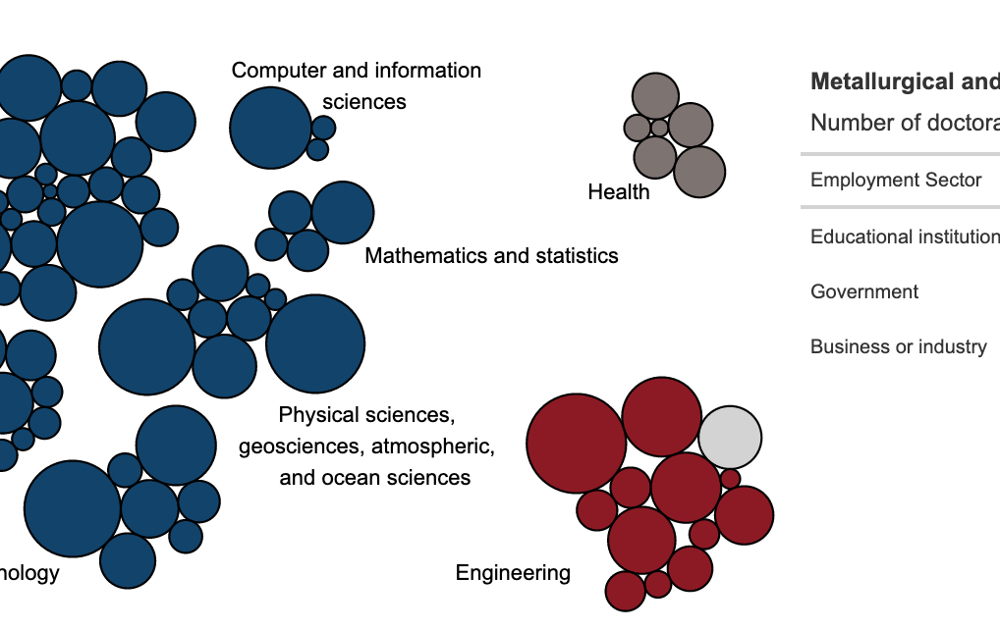

About this project
This project developed a series of interactive visuals to highlight the Survey of Doctorate Recipients (SDR) data and its utility on the SDR survey website. These visuals highlight the breadth and depth of the data and show viewers the importance of collecting SDR data and how it can be used to gain insight about the population of doctorate recipients in the U.S.
There are four different visuals:
Bubble chart exploring the number of doctorates in each degree field with a paired table showing employment sectors for that field,
Bar chart showing the sex breakdown of doctorate holders in different occupations,
Parallel sets diagram showing movement patterns in and out of the workforce,
Map and bar showing where doctorate holders live and work around the world.
Who was involved
These ‘Data in Action’ visuals were a collaboration between me, Nola du Toit, and Lance Selfa. Two of the graphics were built by me in R-based tools, while two of them were built by Lance and Nola in Tableau.
My role
I programmed both the bubble chart and parallel sets diagram, after working with Lance and Nola to design them.
Tools used
These interactive charts displayed and laid out as HTML pages using rmarkdown. The bubble chart was built using ggiraph and the tables on the right are ggiraph hover-overs built using the gt package. The parallel sets diagram was built in D3 and included in the page using r2d3.
Learn more about some of the key tools from this project by clicking on the hex.